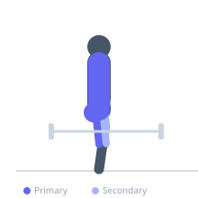
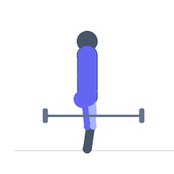

Exercise guide / Sandbag Clean
Sandbag Clean
The sandbag clean is an explosive hip-extension movement that drives a heavy sandbag from the floor to the shoulder or chest, training the same posterior chain muscles as the barbell power clean but with an awkward, shifting implement that demands superior grip strength and core stability. The unstable load prevents the precise bar path of Olympic lifting, instead requiring the athlete to adapt dynamically throughout each repetition. It is an excellent power development tool for athletes and tactical populations who need to handle irregular loads.
Primary muscles
gluteus maximus
biceps femoris long head
erector spinae
trapezius upper
Secondary muscles
vastus lateralis
biceps brachii long head
flexor carpi radialis
Stabilizers
transverse abdominis
internal oblique
Equipment


Starting position
- The sandbag is on the floor in front of the feet. Hinge at the hips, grab the sandbag handles or hug the bag with both arms, back flat, chest up.
Setup
- Choose a sandbag weight that allows an explosive clean without losing postural control — typically 30–50% of bodyweight to start. Use a sandbag with handles for the first attempts.
Steps
- Step 1: Deadlift the sandbag from the floor to mid-thigh, keeping it close to the body.
- Step 2: Extend the hips explosively — the same hip pop as a kettlebell swing. Drive the elbows high as you pull the bag upward.
- Step 3: As the bag rises, drop under it slightly and 'catch' it at the shoulder or chest level, rotating the elbows forward.
- Step 4: Stand tall in the catch position with the bag at the chest or shoulder, core braced.
- Step 5: Lower the bag to the floor with control by hinging at the hips. Repeat.
Coaching cues
- Hips first — do not muscle it up with the arms
- Hug the bag tight to your body throughout the pull
- Drive the elbows high at the top
Breathing
- Exhale sharply at the hip extension (the most explosive moment). Inhale on the way back down to the floor.
Range of motion
- Full hip extension at the top of the drive. The bag should travel from the floor to shoulder height in one continuous movement.
Tempo
- Power development: 3–5 reps × 4–6 sets. Rest 2–3 minutes. Conditioning: 8–10 reps × 3–4 sets with 90 seconds rest.
Common mistakes
- Lifting with the back and arms instead of using explosive hip extension as the primary driver
- Not pulling the elbows high enough, causing the bag to crash into the chest
- Soft catch — always brace the core hard at the moment the bag arrives at the shoulder
Safety
- If the bag slips, let it drop — do not catch it awkwardly to protect the lower back
- Master the deadlift pattern and kettlebell swing before loading the sandbag clean heavily
Training
- strength: 3–5 reps
- endurance: 8–12 reps
- strength: 4–6 sets
- endurance: 3–4 sets
- Rest: {'strength': 180, 'endurance': 90}